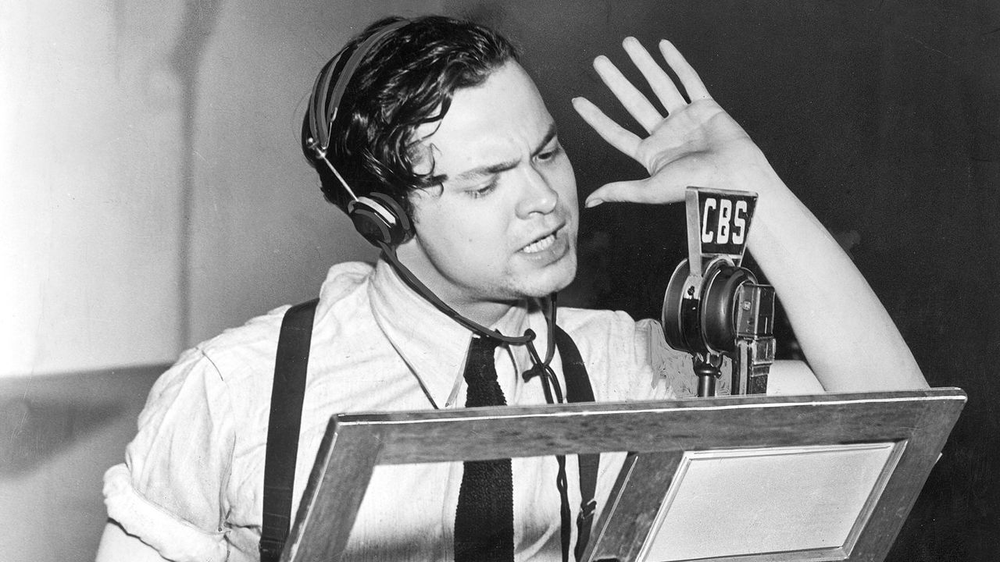

George Orson Welles was born in Kenosha, Wisconsin, in May 1915. Welles' father was a successful inventor, and his mother was a trained concert pianist. The family fell on hard times in 1919, and moved to Chicago. Both of Welles' parents had passed away by the time he was 16 years old. Despite dealing with family troubles and uncertainty throughout his youth, Welles had already developed skills as a musician, actor, writer, and painter at his young age.
Welles traveled to Ireland in the early '30s to paint, and later to perform. Welles got experience performing at Dublin's Abbey Theatre. Soon after, he returned to the U.S. It was there that Welles became a major contributor to the Federal Theatre Project, a New Deal program designed to uplift artists and performers amidst the Great Depression. At only age 20, Welles toured the nation with a production of Macbeth that featured a largely African American cast and defied segregation policies of the time.
Welles founded the Mercury Theatre in 1937, where he continued to experiment with all of the mediums at his disposal. His theatre work was successful, and he used the radio to push the limits of narrative storytelling. Welles' narrated productions were broadcast across the country, and helped him transcend to superstardom. Famously, his radio adaptation of The War of the Worlds by H. G. Wells fooled some listeners into believing they were listening to a news broadcast. However, the reports of ensuing mass hysteria were largely exaggerated.

Welles got his start in Hollywood filmmaking in the early '40s with what is perhaps his most defining work to this day: his 1941 film Citizen Kane. The film broke boundaries technically and narratively, and vastly influenced Hollywood filmmakers and the artform as a whole. In 2022, directors from around the world voted Citizen Kane the second best film of all time in the Sight and Sound Director's Poll. From 1962 to 2002, the film held the number one spot in the poll.
Welles made a number of successful Hollywood films before leaving Hollywood in the late '40s to work on films and theatrical productions in Europe. Among them was The Third Man (1949), which starred Welles and was written by renowned novelist Graham Greene. Despite an initially mixed response, the film is now considered an all-time classic. Welles continued to write, direct, and act into the 1980's, solidifying himself as a generation-defining entertainer.
Welles suffered a heart attack in his Hollywood home in 1985, and passed away at the age of 70. His life and legacy are preserved in his decades of work, which continue to inspire artists of today.